NSM 2026 · Information
Practical information
Where the meeting takes place, how to reach IIT Kanpur, where to stay, who is organising it, and how to get in touch.
01 Venue
IIT Kanpur campus
The meeting is hosted by the String theory group at the Department of Physics, Indian Institute of Technology Kanpur, a quiet residential campus away from the bustle of Kanpur city.
Note: The conference will take place at two venues on campus, the Outreach Auditorium and Lecture Hall 18 (L-18). Each day's sessions will be held at a single venue: see the schedule.
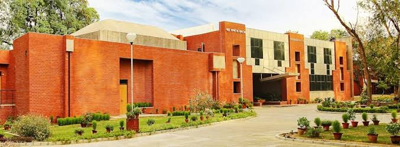

Conference location
- Location
- Outreach Auditorium and Lecture Hall 18 (L-18)
- Address
-
- Outreach Auditorium: adjacent to VH-1 (Guest House)
- L-18: in the New Lecture Hall Complex
- Security
- 0512-259-7999
- Health Centre
- 0512-259-7777
Food and coffee on campus
Cafés in the academic area, canteens in every hostel, and more places around the campus, from late-night snacks to sit-down dinners. Hours can differ on some days and during the winter break: the map links show the latest.
In the academic area
-
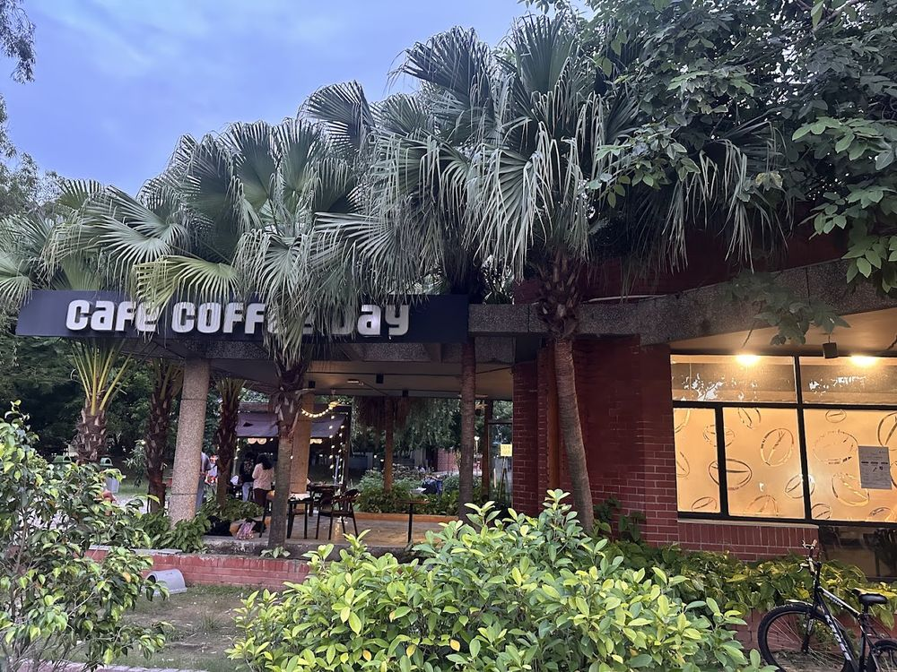
Café Coffee Day
Coffee and snacks, with tables on a covered terrace among the palms.
Open 8:00 am – 11:55 pm
-
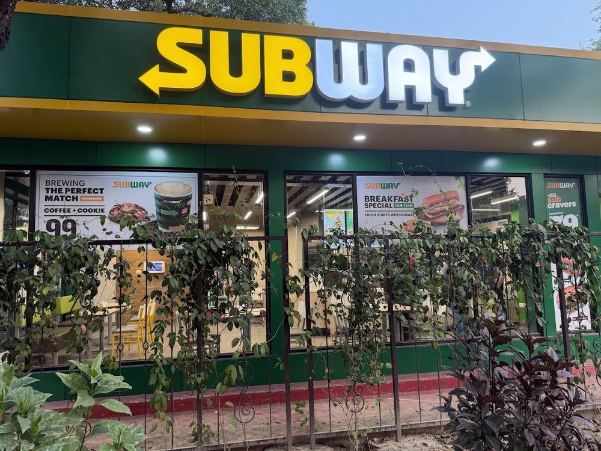
-
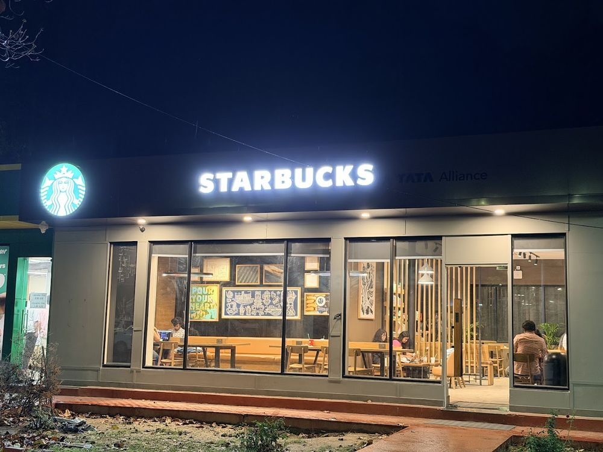
Starbucks
Coffee, tea and snacks, with indoor seating.
Open 8:00 am – 1:00 am
In the hostels
-
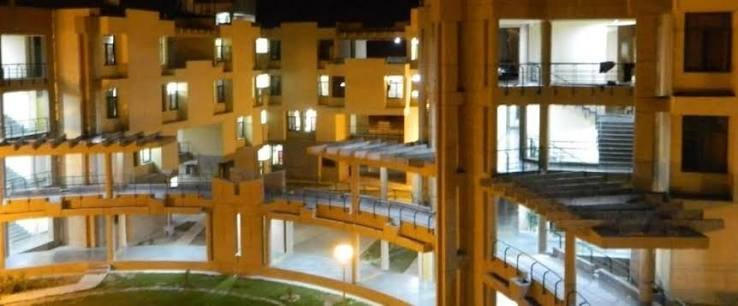
Boys' and girls' hostels
Hostel canteens
Every hostel has its own canteen, serving meals and snacks from the afternoon until late at night. During the winter break, it depends on whether a particular hostel's canteen is running.
Open 2:00 pm – 2:00 am
Elsewhere on campus
-
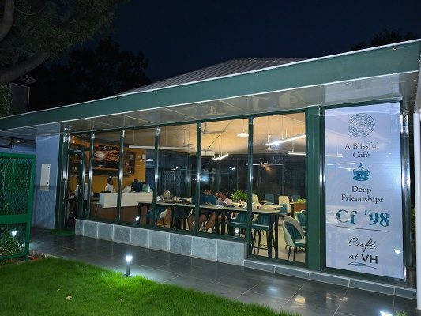
VH-1, next to the Outreach Auditorium
CF ’98 Café
The café of Visitors' Hostel 1, a few steps from the Outreach Auditorium.
Open 10:00 am – 10:00 pm
-
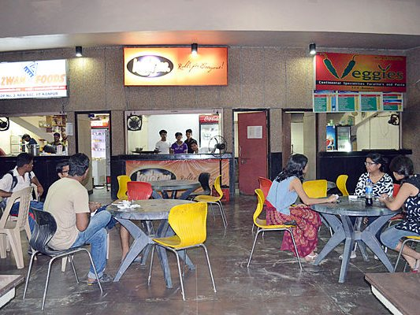
OAT (Open Air Theatre)
Eateries at OAT
Several food counters around, and a nice place to hang out at night.
A good place on campus to find shawarma.
Open 4:00 pm – 3:00 am
-
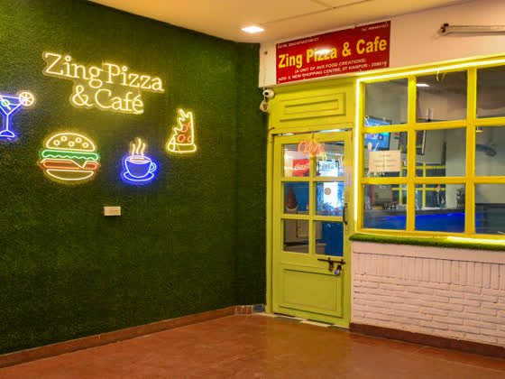
New Shopping Centre
Zing Pizza & Café
Pizzas, burgers, snacks and coffee.
Open 11:00 am – 1:00 am
-
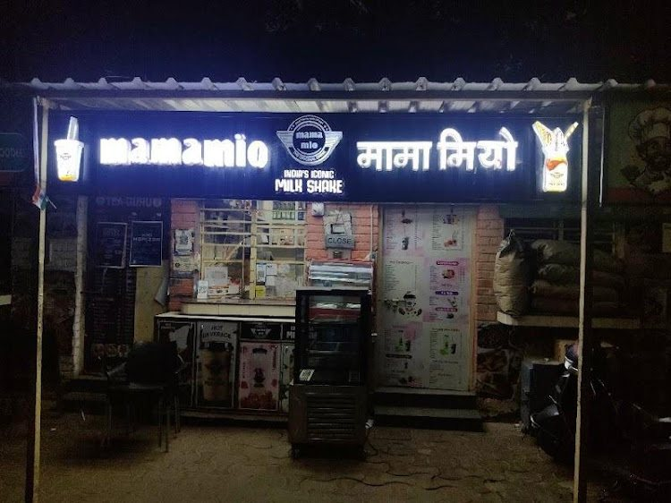
Residential area
Food court
A late-night option for meals, snacks and milkshakes.
Open 4:00 pm – 3:00 am
-
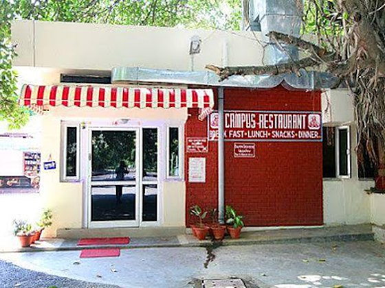
Shopping Centre
Campus Restaurant (Wazwan Foods)
A sit-down restaurant for a proper lunch or dinner. A little costlier than the cafés and canteens, and a good pick for an unhurried evening meal.
Open 12:00 pm – 11:00 pm
-
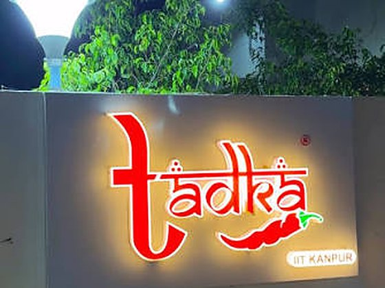
Shopping Centre
Tadka Restaurant
Another proper dinner place, next door to the Campus Restaurant. Prices are a little higher than at the cafés and canteens; good for a group dinner after the day's talks.
Open 10:00 am – 10:30 pm
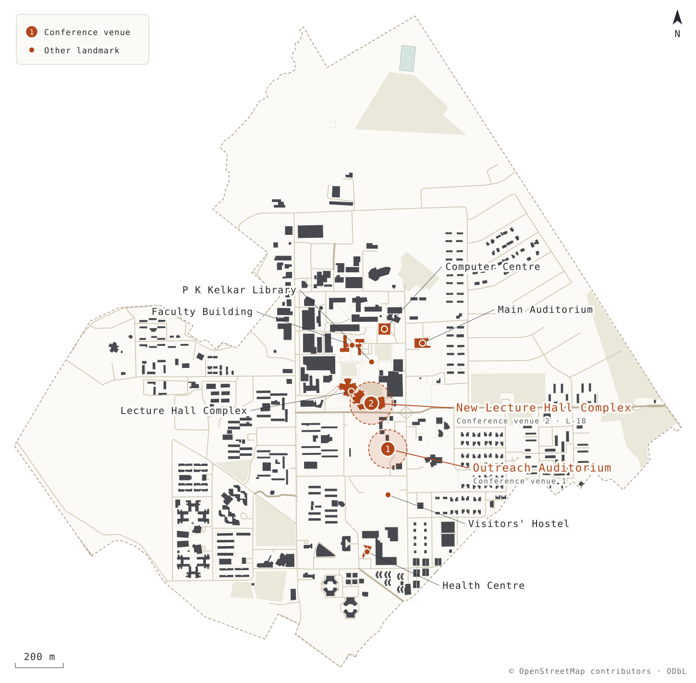
02 Getting here
Reaching IIT Kanpur
-
By air
Lucknow Airport
≈ 70 km · 1.5 to 2 hours
Taxis and pre-paid taxis run to IIT Kanpur from Chaudhary Charan Singh (CCS) International Airport.
-
By air
Kanpur Airport
≈ 25 km · about 1 hour
Kanpur (Chakeri) airport, with flights from several major Indian cities, including Delhi, Mumbai, Bengaluru and Hyderabad.
-
By train
Kanpur Central
≈ 20 km
Pre-paid taxis are available at the station. There is also a direct metro from the station to IIT Kanpur, running from 6:00 to 22:00.
-
Around Kanpur
Local transport
Metro · autos · app cabs
The metro, auto-rickshaws and app-based cabs (Ola, Uber, Rapido) are readily available.
Useful links
- Plan your visit to IIT Kanpur Official travel information
- IIT Kanpur on Google Maps Directions
- About Kanpur city History, food, places
03 Accommodation
Stay
How rooms are allotted to participants will be announced here.
-
On campus
Visitors' Hostel
IIT Kanpur's Visitors' Hostel offers secure accommodation on campus and is the most convenient place to stay.
-
On campus
Student hostels
Details to be announced
- Check-in
- TBA
- Check-out
- TBA
- Meals info
- TBA
04 Organisers
Organising committee
- Arjun BagchiIIT Kanpur
- Diptarka DasIIT Kanpur
- Apratim KavirajIIT Kanpur
- Nilay KunduIIT Kanpur
05 Contact
Write to the organisers
For questions about registration, travel or accommodation.
- Phone
- TBA
- Post
- Department of Physics
Indian Institute of Technology Kanpur
Kalyanpur, Kanpur 208016
Uttar Pradesh, India - Department
- Department of Physics website